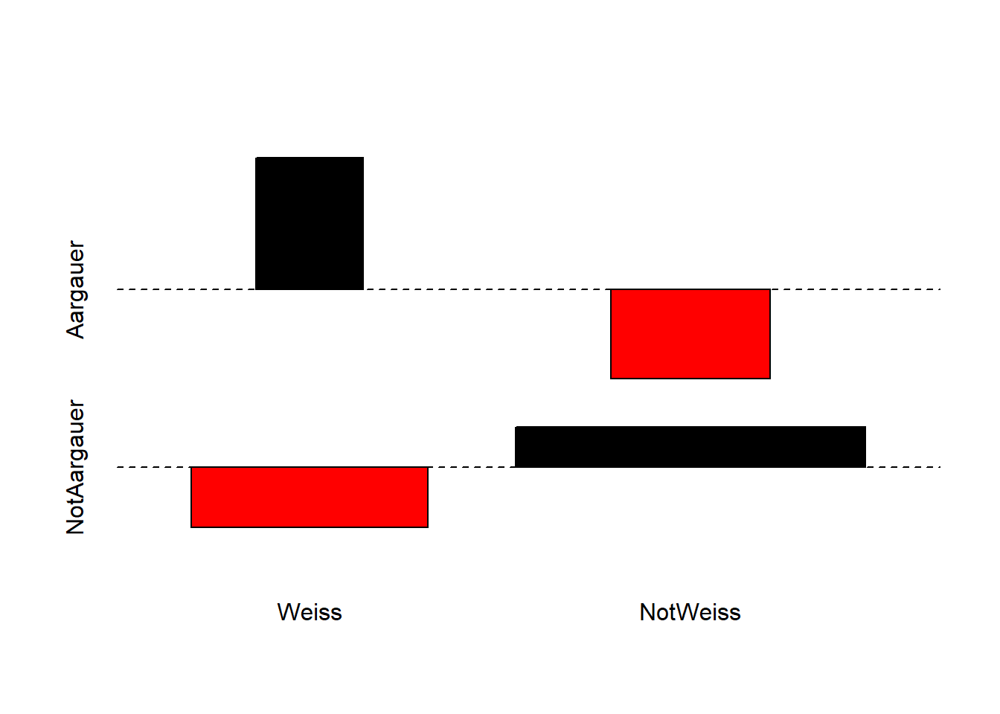
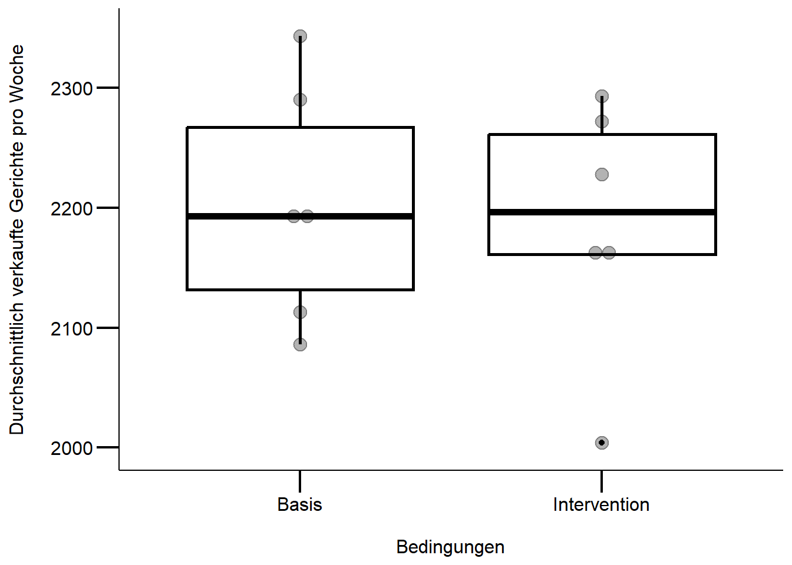
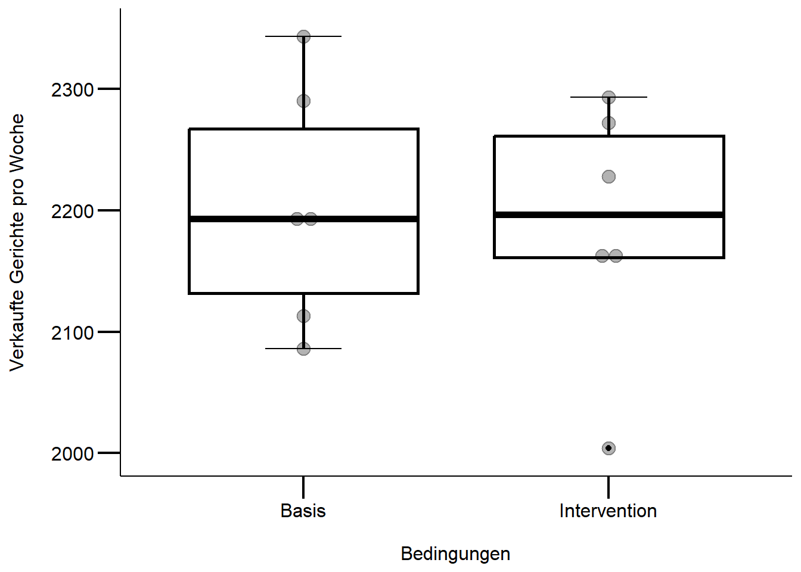

# lade Packages
library("ggplot2")
library("dplyr")
library("readr")
## definiert mytheme für ggplot2 (verwendet dabei theme_classic())
mytheme <-
theme_classic() +
theme(
axis.line = element_line(color = "black"),
axis.text = element_text(size = 12, color = "black"),
axis.title = element_text(size = 12, color = "black"),
axis.ticks = element_line(size = .75, color = "black"),
axis.ticks.length = unit(.5, "cm")
)Statistik 1: Übung
Anleitung zu den Übungen
Zu erstellen sind:
Ein quarto generiertes html-Dokument mit dem begründeten Lösungsweg (R-Code, R Output und dessen Interpretation)
ein ausformulierter Methoden- und Ergebnisteil (für eine wiss.Arbeit).
Wichtige Hinweise zur Ausgestaltung:
- Bitte erklärt und begründet die einzelnen Schritte, die ihr unternehmt, um zu eurem Ergebnis zu kommen. Dazu erstellt bitte ein mit Quarto generiertes html-Dokument (oder Word-Dokument), in dem ihr Schritt für Schritt den verwendeten R-Code, die dazu gehörigen Ausgaben von R, eure Interpretation derselben und die sich ergebenden Schlussfolgerungen für das weitere Vorgehen dokumentiert.
- Dieser Ablauf sollte insbesondere beinhalten:
- Überprüfen der Datenstruktur nach dem Einlesen, welches sind die abhängige(n) und welches die unabängige(n) Variablen etc.
- Explorative Datenanalyse, um zu sehen, ob evtl. Dateneingabefehler vorliegen oder Datentransformationen vorgenommen werden sollten
- Auswahl und Begründung eines statistischen Verfahrens
- Bestimmung des vollständigen/maximalen Models
- Selektion des/der besten Models/Modelle
- Durchführen der Modelldiagnostik für dieses
- Generieren aller Zahlen, Statistiken und Tabellen, die für eine wiss. Ergebnisdarstellung benötigt werden
- Formuliert abschliessend einen Methoden- und Ergebnisteil (ggf. incl. adäquaten Abbildungen/Tabellen) zu dieser Untersuchung in der Form einer wissenschaftlichen Arbeit (je einen ausformulierten Absatz von ca. 60-100 Worten bzw. 3-8 Sätzen). Alle wichtigen Informationen sollten enthalten sein, unnötige Redundanz dagegen vermieden werden.
Stat1: Übung
Aufgabe 1.1: Assoziationstest
Führt einen Assoziationstest zweier kategorialer Variablen (mit je zwei Ausprägungen) durch. Dazu erhebt ihr selbst die Daten (wozu ihr euch auch in Teams zusammenschliessen könnt). Ihr könnt z.B. eine Datenerhebung unter Mitstudierenden durchführen (etwa Nutzung Mac/Windows vs. männlich/weiblich). Bitte formuliert vor der Datenerhebung eine Hypothese, d.h. eine Erwartungshaltung, ob und welche Assoziation vorliegt und wenn ja warum. Beachtet, dass ihr für diese Form des Assoziationstests genau zwei binäre Variablen benötigt. Wenn ihr also kategoriale Variablen mit mehr als zwei Ausprägungen habt, so könnt ihr entweder Ausprägungen sinnvoll zusammenfassen oder seltene Ausprägungen im Test unberücksichtigt lassen.
Aufgabe 1.2: t-Test
**T-Test mit Datensatz *Novanimal_Weeks.csv**
Im Forschungsprojekt NOVANIMAL wurde u.a. in der ZHAW-Mensa untersucht, was es braucht, damit Menschen freiwillig weniger tierische Produkte konsumieren. Dazu wurden in sogenannten Interventionswochen mehr vegane und vegetarische Gerichte (zu Lasten kleinerer Fleischgerichtsauswahl) angeboten. Eine erste grundsätzliche Frage war, ob die unterschiedliche Gerichtsauswahl zu unterschiedlichen Verkaufszahlen führten. Beantwortet dazu mit dem Datensatz und geeigneten Tests folgende Frage:
Wurden in den Basis- und Interventionswochen unterschiedlich viele Gerichte verkauft?
- Schau die Daten an: Verstehen und ggf. plotten.
- Definiere die Null- (\(H_0\)) und die Alternativhypothese (\(H_1\)).
- Welche Form von t-Test musst Du anwenden: einseitig/zweiseitig resp. gepaart/ungepaart?
- Führe einen t-Test durch.
- Wie gut sind die Voraussetzungen für einen t-Test erfüllt (z.B. Normalverteilung der Residuen und Varianzhomogenität)?
- Stelle deine Ergebnisse angemessen dar, d.h. Text mit Abbildung und/oder Tabelle
Statistik 1: Lösung
Demoscript herunterladen (.qmd)
Vorebreitung R-Session
Musterlösung Übung 1.1: Assoziationstest
In diesem Beispiel soll einem Klischee auf den Grund gegagen werden: Sind Aargauer überdurchschnittlich mit weissen Socken assoziiert? Die Datenerhebung basiert auf männlichen Studenten bei denen folgende beiden binären Variablen erhoben wurden:
- Sockenfarbe: weiss, nicht-weiss
- Selbstdeklarierte Kantonsangehörigkeit: AG, nicht-AG
Die Hypothese ist: Das Klischee trifft zu, weisse Socken sind überdurchschnittlich häufig mit Aargauer Studenten assoziiert.
Die Datenerhebung unter 35 Studenten ergab folgende Datengrundlage:
- Weisssockige Aargauer: 4
- Nicht-weisssockige Aargauer: 2
- Weissockige nicht-Aargauer: 7
- Nicht-weisssockige nicht-Aargauer: 22
# Matrix erstellen
Aargauer <- c(4, 2)
names(Aargauer) <- c("Weiss", "NotWeiss")
NotAargauer <- c(7, 22)
names(NotAargauer) <- c("Weiss", "NotWeiss")
AGsocks <- data.frame(Aargauer, NotAargauer)
AGsocks <- as.matrix(AGsocks)
AGsocks Aargauer NotAargauer
Weiss 4 7
NotWeiss 2 22# Daten anschauen mit erstem Google-Ergebnis für "Assoziation Plot r"
assocplot(AGsocks) # Interpretation des Plots mit dem Befehl ?assocplot
Der Assoziationsplot zeigt, dass in den Daten weisse Socken bei den Aargauern überverterten und bei den Nicht-Aargauern untervertreten sind.
Für kleine Erwartungswerte in den Zellen (< 5) ist der Chi-Quadrat-Test nicht zuverlässig (siehe “Warning message”). Darum wird mit Fishers exaktem Test gearbeitet.
# Tests durchführen
chisq.test(AGsocks) # Chi-Quadrat-Test nur zum anschauen.
Pearson's Chi-squared test with Yates' continuity correction
data: AGsocks
X-squared = 2.4323, df = 1, p-value = 0.1189fisher.test(AGsocks) # "Fisher's Exact Test for Count Data"
Fisher's Exact Test for Count Data
data: AGsocks
p-value = 0.06323
alternative hypothesis: true odds ratio is not equal to 1
95 percent confidence interval:
0.6811227 78.4336189
sample estimates:
odds ratio
5.897263 Ergebnisse
In den erhobenen Daten konnte keine signifikante Assoziation zwischen Kantonangehörigkeit (AG, nicht-AG) und Sockenfarbe (weiss, nicht-weiss) festgestellt werden. Der p-Wert von Fishers exaktem Test war nur marginal signifikant (p = 0.063). Das nicht-signfikante Resultat überrascht auf den ersten Blick, denn der “odds ratio” im Datensatz ist mit 5.9 relativ hoch und 67 % der Aargauer trugen weisse Socken während nur 24 % der Nicht-Aargauer weisse Socken trugen. Doch war der Anteil von nur 6 Aargauer in der nur 35 Männer umfassenden Stichprobe relativ klein, um ein verlässliches Bild der Sockenpräferenzen der Aargauer zu machen. Insofern leuchtet es ein, das bei dieser kleinen und unausgewogenen Stichprobe die “Power” des satistischen Tests (um die Nullhypothese zu verwerfen) relativ klein ist.
Musterlösung Übung 1.2: t-Test
Null- und Alternativhypothese
\(H_0\): Es gibt keinen Unterschied in den Verkaufszahlen zwischen den Basis- und den Interventionswochen.
\(H_1\): Es gibt einen Unterschied in den Verkaufszahlen zwischen den Basis- und den Interventionswochen.
# lade Daten
df <- read_delim("datasets/stat/Novanimal_Weeks.csv", delim = ";")
df # Daten anschauen# A tibble: 12 × 3
week condit tot_sold
<dbl> <chr> <dbl>
1 40 Basis 2188
2 41 Intervention 2004
3 42 Basis 2113
4 43 Intervention 2160
5 44 Basis 2290
6 45 Intervention 2165
7 46 Intervention 2272
8 47 Basis 2198
9 48 Intervention 2293
10 49 Basis 2343
11 50 Intervention 2228
12 51 Basis 2086# überprüft die Voraussetzungen für einen t-Test
ggplot(df, aes(x = condit, y = tot_sold)) + # achtung 0 Punkt fehlt
geom_boxplot(fill = "white", color = "black", size = 1) +
geom_dotplot(binaxis = "y", stackdir = "center", alpha = 0.3) +
labs(x = "\nBedingungen", y = "Durchschnittlich verkaufte Gerichte pro Woche\n") +
mytheme
# Auf den ersten Blick scheint es keine starken Abweichungen zu einer
# Normalverteilung zu geben resp. es sind keine extremen schiefen Verteilungen
# ersichtlich# führt einen t-Tests durch;
# es wird angenommen, dass die Verkaufszahlen zwischen den Bedingungen
# unabhängig sind
t_test <- t.test(tot_sold ~ condit, data = df)
t_test
Welch Two Sample t-test
data: tot_sold by condit
t = 0.27168, df = 9.9707, p-value = 0.7914
alternative hypothesis: true difference in means between group Basis and group Intervention is not equal to 0
95 percent confidence interval:
-115.2743 147.2743
sample estimates:
mean in group Basis mean in group Intervention
2203 2187 # alternative Formulierung
t.test(
df[df$condit == "Basis", ]$tot_sold,
df[df$condit == "Intervention", ]$tot_sold
)
Welch Two Sample t-test
data: df[df$condit == "Basis", ]$tot_sold and df[df$condit == "Intervention", ]$tot_sold
t = 0.27168, df = 9.9707, p-value = 0.7914
alternative hypothesis: true difference in means is not equal to 0
95 percent confidence interval:
-115.2743 147.2743
sample estimates:
mean of x mean of y
2203 2187 Methoden
Unser Ziel bestand darin, einen Vergleich der aggregierten Verkaufszahlen zwischen den Interventions- und Basiswochen durchzuführen. Wir gingen davon aus, dass die wöchentlichen Verkaufszahlen unabhängig voneinander sind, weshalb wir die Unterschiede zwischen den Verkaufszahlen pro Woche in den beiden Bedingungen mittels eines t-Tests untersuchten. Obwohl bei der visuellen Prüfung der Modellvoraussetzungen keine schwerwiegenden Verletzungen festgestellt wurden (abgesehen von einem Ausreißer), entschieden wir uns dennoch für einen Welch t-Test. Es sei angemerkt, dass die Gruppengröße mit jeweils n = 6 Wochen eher klein war. Trotzdem erzielten die T-Tests verlässliche Ergebnisse. Für weitere Informationen zu diesem Thema verweisen wir auf die verlinkte Studie.
Ergebnisse
In den Basiswochen werden wöchentlich mehr Gerichte verkauft als in den Interventionswochen, wie in Abbildung 1 ersichtlich ist. Allerdings ergab der Welch t-Test, dass es keine signifikanten Unterschiede in den wöchentlichen Verkaufszahlen zwischen den beiden Bedingungen (t(10) = 0.272 , p = 0.791). m die Ergebnisse weiter zu bestätigen, könnte eine \(\chi^2\)-Test durchgeführt werden, da die Gruppengröße mit n = 6 als eher klein betrachtet werden kann.
